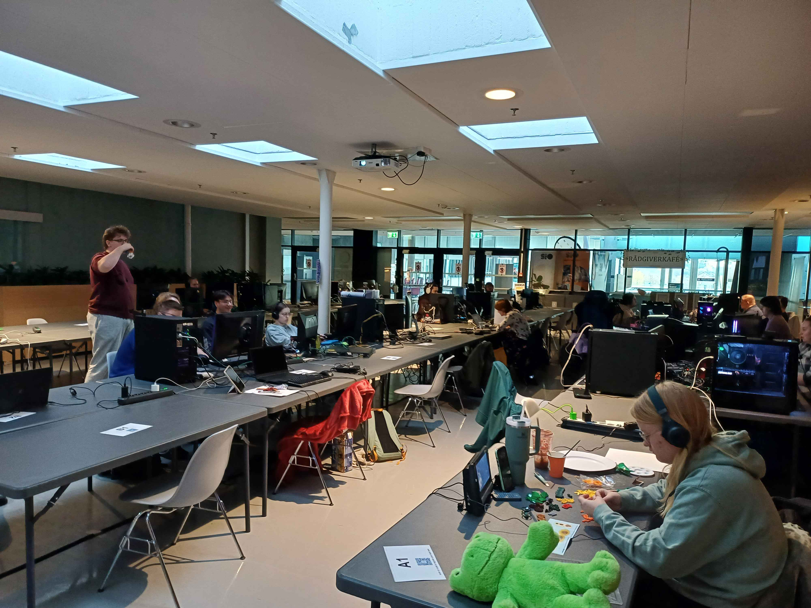
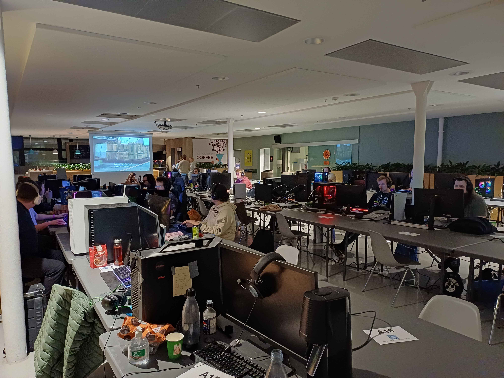
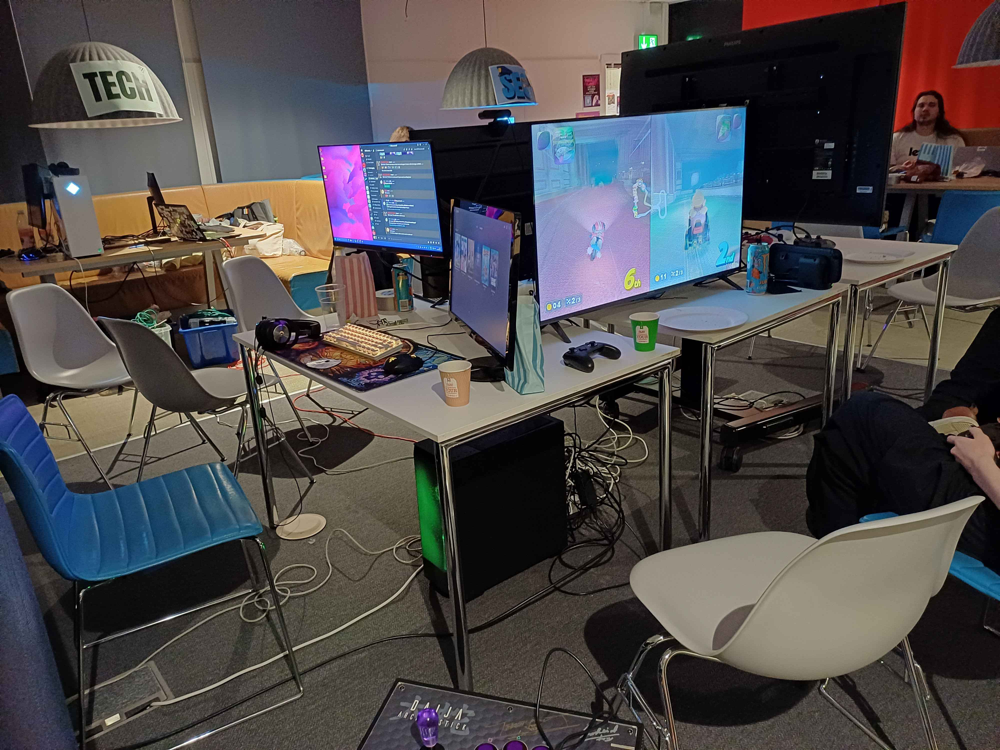

Hvert halvt år på HIOF (Høgskolen i Østfold) holder de et arrangement som de kaller Semester LANet. Det er et LAN (Local area nettwork) som er tilgjengelig for alle studenter i HIOF. Et veldig sosialt arrangement som mange anti-sosiale folk blir med på, men hvorfor det? Hvordan tiltrekker Høgskolen så mange ulike personer til et sted?


For å svare på disse spørsmålene, så fikk vi prate med Einar, som er leder for dette semester LANet. Vi spurte: Hvorfor fortsette med et slikt arrangement? Han bringer opp at fra forrige LAN var det 50 stykker av dem som meldte seg på umiddelbart da invitasjonsskjemaene ble sendt ut.
De så at studenter er interesserte etter LANet fra forrige semester. Han selv syntes det ikke bare er for sosialitet men også for mental helse å få så mange nerder i et sted å ta med seg nerde tinga sine for å vise seg fram at sånt er viktig.
Vi spurte han: Hva er viktig når man planlegger et slikt arrangement? Da ble det nevnt at det første er å lage en risikoanalyse og deretter liste ned hvor mange ansvarlige man må kontakte.
Blant annet de han måtte kontakte var: Kommunen, Brannvesenet, Politiet, Høyskolens Administrasjon (Driftaldering, Sikkerhetsavdeling, IT), Bedrifter og Vaktmesteren. En tøff prosess er det, spesielt siden man må gå ja av alle, slik at de kan sette opp et slikt arrangement. I tillegg til at det skal gå over flere netter og at alt funker med lokalet og utstyret som de kan låne eller betale for. Alt dette for én koselig helg der nerdene kan få slå seg sammen med andre nerder.

Høsten 2026, sitt semester LAN, var det ca. 82 som kom til arrangementet. Semester LANene tilbyr de mye spennende. Som for eksempel: Pizza til alle som er med på lørdag, turneringer hver dag i en rekke forskjellige spill der hardcore gamers kan ha det moro med å spille sammen med større fokus på konkuranse, heftige premier til disse turneringene og mange bord klar for å sette opp konsoller eller pcer for å spille for gøy!
Disse semesterene LAN hjelper mange som ikke er så sosiale til å venner og de har lyst til å fortsette med Semester LAN vært semester. Einar sier “Dette er noe som må fortsette uansett hva som skjer", så Semester LANet er et arrangement som mange elsker og som folk skal vare så lenge som mulig.
Med et stort fokus på inkludering av alle, har de nylig hatt to blinde studenter over for å virkelig understreke at alle er velkommen. Kort oppsummert så er Semester LANet et av Høgskolen sine største gaver, det viser seg å være en storhetssuksess hvert eneste semester og kanskje du har lyst til å være med neste gang? Du er hjertelig velkommen!